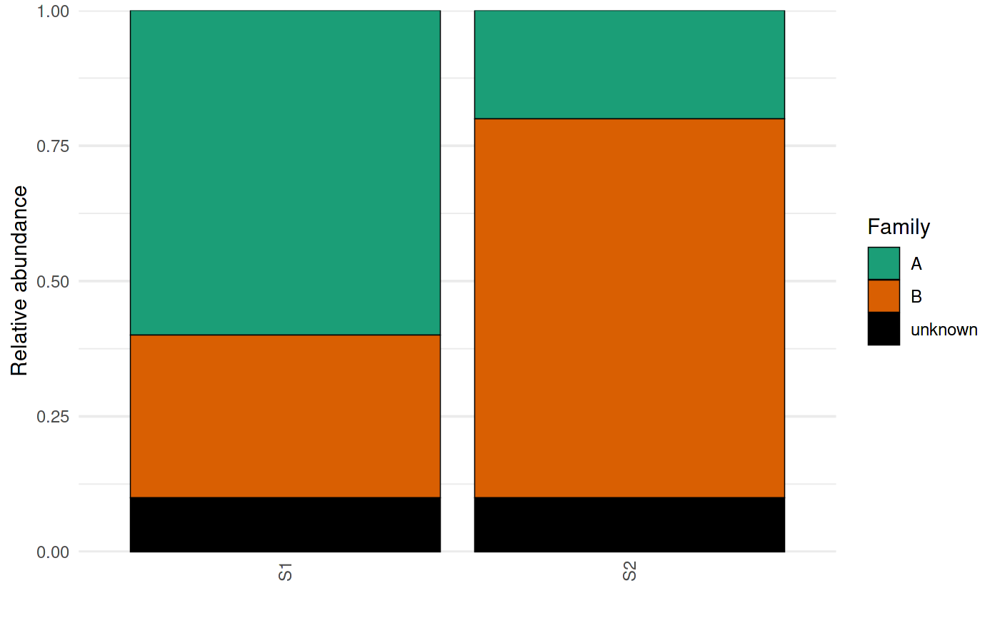
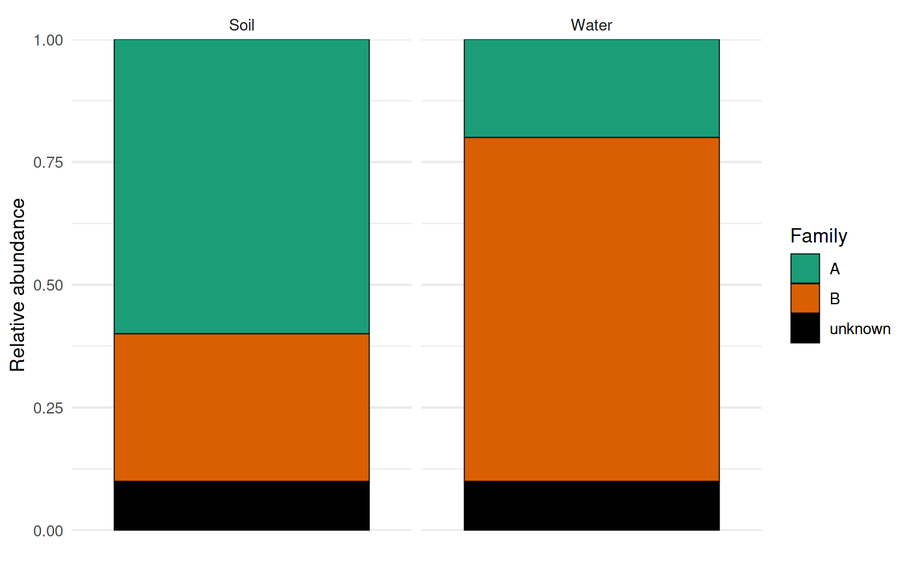

Create stacked taxonomic barplots with optional faceting and strip theming
Source:R/barplot_plot.r
plot_taxonomic_barplot.RdBuilds a stacked barplot of taxonomic composition (relative abundance) from
long-format data (typically produced by process_barplot_data).
The function maps RA to bar height and tax_level to fill color,
applies a user-supplied palette, and optionally facets the plot. If
facet_strip_colors is provided, facet-strip background colors are applied
via ggh4x (if installed).
Usage
plot_taxonomic_barplot(
data,
tax_level,
palette,
x_axis_var = NULL,
facet_by = NULL,
facet_scales = "free",
facet_space = "free_x",
facet_strip_colors = NULL,
show_x_labels = FALSE,
x_label_angle = 90,
add_black_outline = TRUE,
line_width = 0.2,
theme_obj = ggplot2::theme_minimal(),
legend_title = NULL,
y_label = "Relative abundance",
x_label = ""
)Arguments
- data
A data frame in long format that must contain:
RA: relative abundance values (ideally in 0–1).the column named by
tax_level: taxon labels.the column named by
x_axis_var(or the first column ifx_axis_var = NULL).
This is typically the output of
process_barplot_data.- tax_level
Character string giving the taxonomy column to plot as fill (e.g.
"Family","Class").- palette
Named character vector of colors. Names must match the taxon labels in
data[[tax_level]]. The order ofnames(palette)is used to set the factor levels for stacking and legend order.- x_axis_var
Character string giving the x-axis column name. If
NULL, the first column ofdatais used (a message is printed).- facet_by
Optional faceting specification. Either:
a single column name as a string (e.g.
"SampleType"), interpreted as. ~ SampleType, ora formula string (e.g.
"Site ~ SampleType"or". ~ SampleType").
- facet_scales
Facet scaling, passed to
facet_grid()orggh4x::facet_grid2(). Common values:"fixed","free","free_x","free_y".- facet_space
Facet spacing, passed to
facet_grid()orggh4x::facet_grid2(). Common values:"fixed","free","free_x","free_y".- facet_strip_colors
Optional named character vector of colors used to fill facet strip backgrounds. Requires ggh4x; if ggh4x is not installed, a warning is issued and default faceting is used. Names should correspond to facet levels (values of the faceting variable). Compatible with output from
generate_grouped_palette.- show_x_labels
Logical; if
FALSE(default), x-axis tick labels and ticks are removed (useful when there are many samples). IfTRUE, labels are shown and rotated usingx_label_angle.- x_label_angle
Numeric angle used for x-axis labels when
show_x_labels = TRUE(default: 90).- add_black_outline
Logical; if
TRUE(default), draws a black outline around bars viageom_col(color = "black").- line_width
Numeric line width for bar outlines (default: 0.2). Only used when
add_black_outline = TRUE.- theme_obj
A ggplot2 theme object applied to the plot (default:
ggplot2::theme_minimal()).- legend_title
Legend title for the fill scale. If
NULL(default), uses the value oftax_level.- y_label
y-axis label (default:
"Relative abundance").- x_label
x-axis label (default: empty string).
Examples
library(ggplot2)
library(dplyr)
# Minimal toy long-format dataset
toy <- tibble::tibble(
SampleID = rep(c("S1","S2"), each = 3),
Family = rep(c("A","B","unknown"), times = 2),
RA = c(0.6, 0.3, 0.1,
0.2, 0.7, 0.1)
)
pal <- c(A = "#1b9e77", B = "#d95f02", unknown = "#000000")
p <- plot_taxonomic_barplot(
data = toy,
tax_level = "Family",
palette = pal,
x_axis_var = "SampleID",
show_x_labels = TRUE
)
p

# Faceting (string column name -> interpreted as ". ~ SampleType")
toy2 <- toy %>% mutate(SampleType = rep(c("Soil","Water"), each = 3))
p2 <- plot_taxonomic_barplot(
data = toy2,
tax_level = "Family",
palette = pal,
x_axis_var = "SampleID",
facet_by = "SampleType"
)
p2
